Configuring the DxI 9000 to Connect to Power Express
This topic includes information about how to configure the DxI 9000 instrument to connect to Power Express.
Prerequisites
Ensure the following pre-requisite criteria are met prior to performing any of the instructions in this topic.
- Service Mod 12881 complete (Edgemax router latest configuration)
- You must first prepare the DxI 9000 for the automation connection and position and connect the system. See Physically Connecting the DxI 9000 to a Lab Automation System (LAS) for more information.
Potential Configurations
Note: The Host Manual for the DxI 9000, DxC 500 AU, and DxC 500i Analyzers is available to be downloaded from
beckmancoulter.com and registration is required.
See the table below for potential configurations and when to use them:
| Configuration | When Applicable |
|---|---|
| Configuring the DxI 9000 | Mandatory for DxI 9000 to PE communication. If not already connected, perform this first. |
| Configuring the DxI 9000 for Middleware/LIS via a RS-232 Serial Port | When the Middleware or LIS only supports a Serial connection |
| Configuring the DxI 9000 for Middleware/LIS on Local Ethernet |
|
| Configuring the DxI 9000 for Middleware/LIS on a Lab Network |
|
Configuring the DxI 9000
Follow the steps below to configure a DxI 9000 for connection with Power Express:
- Sign in to use the BeckmanAdmin account. See Signing In to Use the BeckmanAdmin Account for more information.
- Enable automation on the DxI 9000 instrument. See Enabling Automation on the DxI 9000 for more information.
- Configure the Router IP address for the Cennexus Dynamic Interface:
Note: Each DxI 9000 will need its own static IP to avoid IP conflicts (i.e. DxI 9000 #1: 134.217.96.191, DxI 9000 #2: 134.217.96.192, etc...). If there are not multiple systems on the automation track, you may skip this step for the first DxI 9000 because the IP is already predefined to 134.217.96.191.
- Log in to the EdgeMax router dashboard. See Configuring the EdgeMax Router for more information.
- From the dashboard, select
Actions for the Power Express CNX (eth3) interface.
Note: The Description may vary and can be changed in the Config screen, but the Interface (eth#) will remain static.
- Select
Config to open the configuration window.
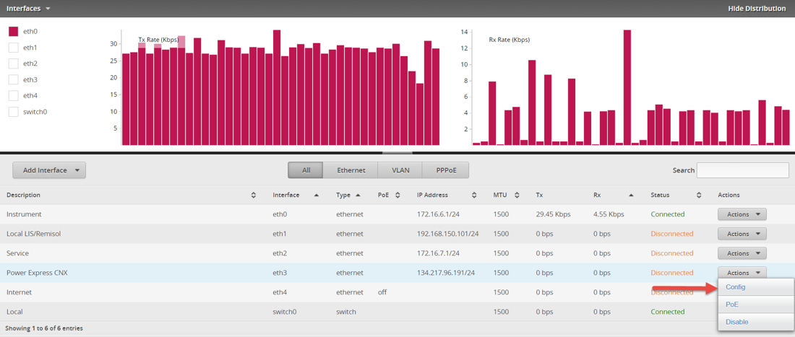
- Enter the IP address allocated to the DxI 9000.
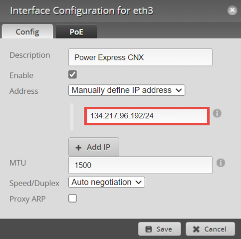
- Select Save to apply the new IP address.
- Ensure the IP addresses are assigned correctly in Cennexus as described in the Power Express Service Manual.
- Use a 9 pin serial connector to connect the LAS to the desired connector at the rear of the instrument.
Note: This cable is not included in the DxI 9000 LAS Kits. The cable should be supplied as part of the LAS system.
- Connect the Ethernet cable from Cennexus to the Power Express CNX (eth3) connector at the rear of the instrument.
Note: The order of the connectors will be reversed for instruments with serial number 300115 and below.

- In the Console App go to to open the System Configuration page.
- Go to to open the Automation Configuration page.
- For the CHANGE MODE select
Online.
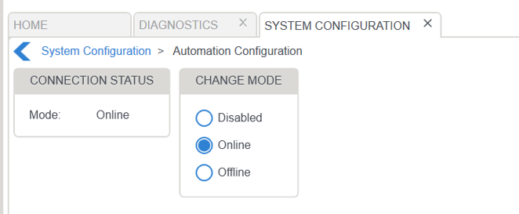
- Go to System Configuration.
- Select Activate to implement the changes.
- Complete any applicable changes on the Power Express as directed by the Power Express Service Manual.
- (Optional): To test the connection on the DxI 9000:
- Go to to open the Automation Communication Test page.
- Select Start Communication Test.
Configuring the DxI 9000 for Middleware/LIS via a RS-232 Serial Port
Perform this procedure to configure a DxI 9000 on Power Express automation for a Middleware or LIS connection via the RS-232 serial port.
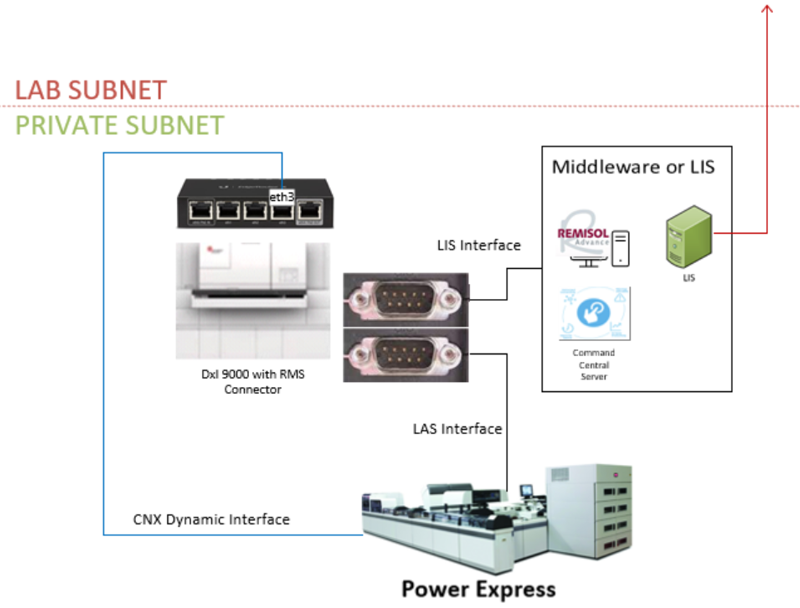
- If not already completed, identify the port number for the serial port which will be used for Middleware/LIS connection. See Identifying the RS-232 Serial Port Number for more information.
- In the Console App go to to open the System Configuration page.
- Select
LIS to open the LIS page.
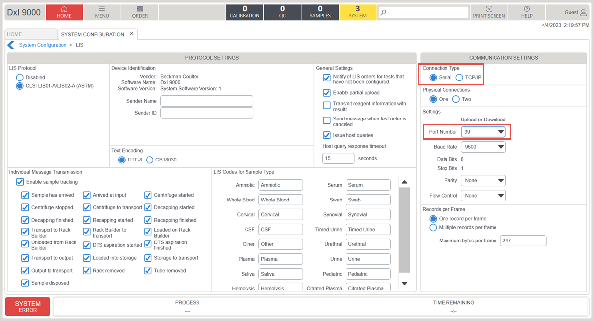
- In the Communication Settings, for the Connection Type select Serial.
- For the Port Number select the number of the port identified above.
- Do not change the other default settings unless the LIS system requires updates (e.g. to match baud rate, etc.).
- Go to System Configuration.
- Select Activate to implement the changes.
Configuring the DxI 9000 for Middleware/LIS on Local Ethernet
Perform this procedure to configure a DxI 9000 connected to Power Express for connection with middleware/LIS managing the instrument on a private subnet:
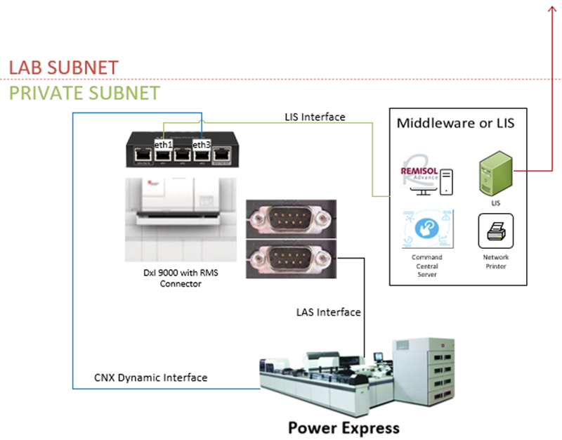
- Log in to the Edgemax router dashboard. See Configuring the EdgeMax Router for more information.
- Complete the following steps if the LIS Interface IP address needs to be different than the default address:
Note: If multiple systems are connected, each will need their own static IP address (i.e. DxI 9000 #1: 192.168.150.191, DxI 9000 #2: 192.168.150.192, etc...).
- From the main dashboard, select
Actions for the Local LIS/Remisol (eth1) interface.
Note: The Description may vary and can be changed in the Config screen, but the Interface (eth#) will remain static.
- Select
Config from the drop-down options to open the configuration window.
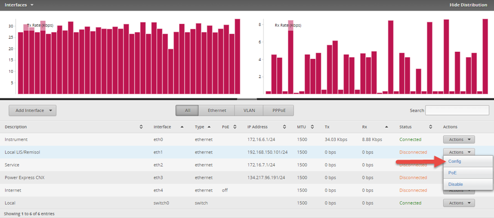
- Enter the IP address. The subnet mask must be entered after the IP address. For example, if the IP address is 192.16.13.11 and the subnet mask is 255.255.255.0 then enter
192.16.13.11/24.

- Select Save to apply the new IP address.
- From the main dashboard, select
Actions for the Local LIS/Remisol (eth1) interface.
- Complete the following steps if a different subnet from 192.168.150.x is used:
- From the Dashboard, select the Firewall/NAT tab.
- Select the NAT tab.
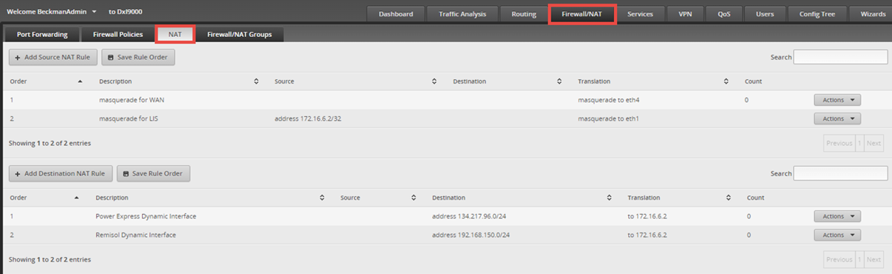
- Select Actions in the Remisol Dynamic Interface row.
- Select
Config to open the Remisol Dynamic Interface NAT Rule.
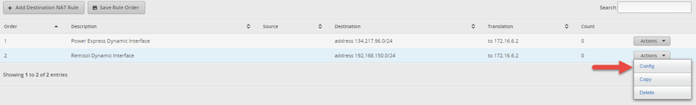
- Enter the subnet for this interface. For example, if the defined IP address is 192.16.13.11/24 then enter the subnet as
192.16.13.0/24.
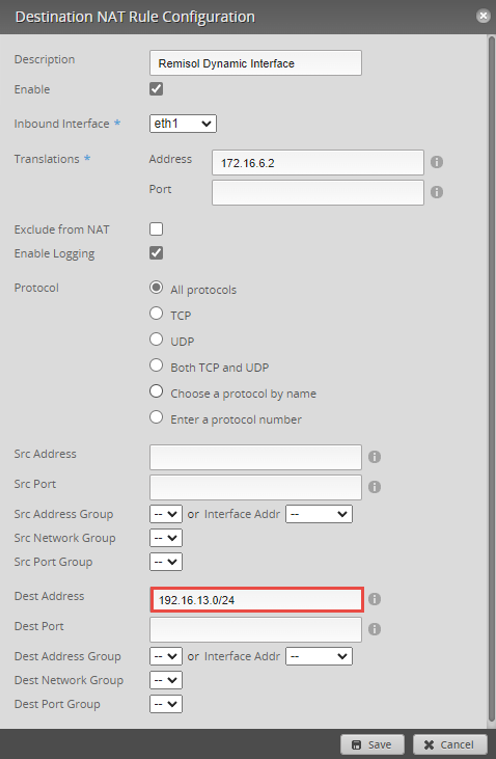
- Select Save to apply the updated NAT rule.
- Connect the Ethernet cable from the private subnet to the Local LIS/Remisol (eth1) connector at the rear of the instrument.
Note: The order of the ports will be reversed for instruments with serial number 300115 and below.
Configuring the DxI 9000 for Middleware/LIS on a Lab Network
Perform this procedure to configure a DxI 9000 connected to Power Express for connection with middleware/LIS (i.e. Virtual Remisol) connection via the lab network:
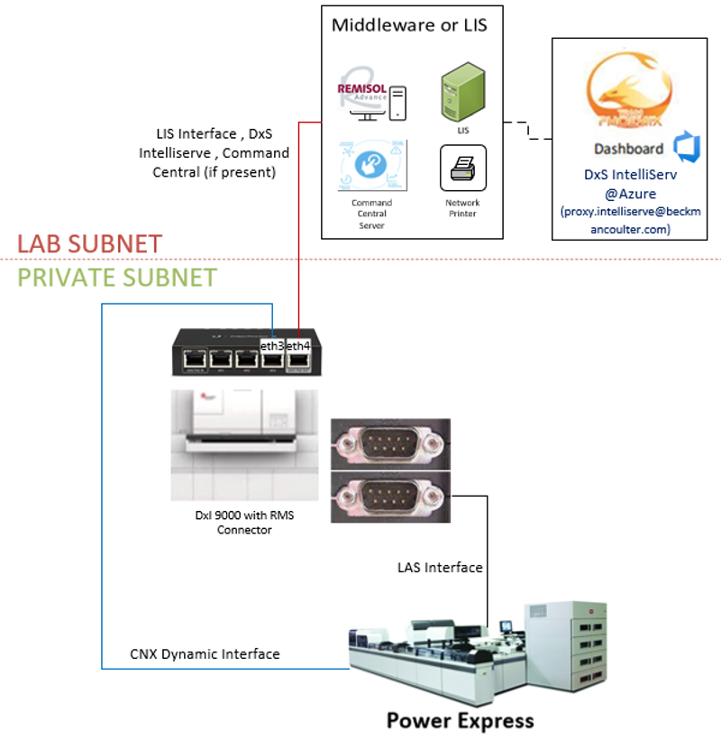
- Log in to the Edgemax router dashboard. See Configuring the EdgeMax Router for more information.
- Enter the lab network static IP address:
- From the main dashboard, select
Actions for the Internet (eth4) interface.
Note: The Description may vary and can be changed in the Config screen, but the Interface (eth#) will remain static.
- Select Config to open the configuration window.
- For the
Address select
Manually define IP address.
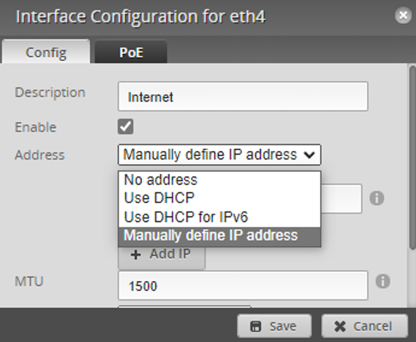
- Enter the IP Address provided by the IT administrator.
Note: The subnet mask must be entered after the IP address for example, if the IP address is 192.16.13.11 and the subnet mask is 255.255.255.0 then enter 192.16.13.11/24
- Select Save to apply the new IP address.
- From the main dashboard, select
Actions for the Internet (eth4) interface.
- Enter the network gateway:
- Select System at the bottom of the page.
- Locate the Gateway section and enter the default gateway provided by the IT administrator.
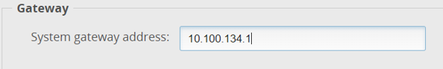
- Scroll down and select Save to apply the gateway.
- Perform this step only if the Command Central Server is located on the lab network, alternatively, skip this step:
- From the Dashboard, select the Firewall/NAT tab.
- On the Port Forwarding tab select Add Rule.
- Configure the port as shown below:
- Original port = 5900
- Protocol = Both
- Forward-to address = 172.16.6.2
- Forward-to port = 5900
- Description = Command Central
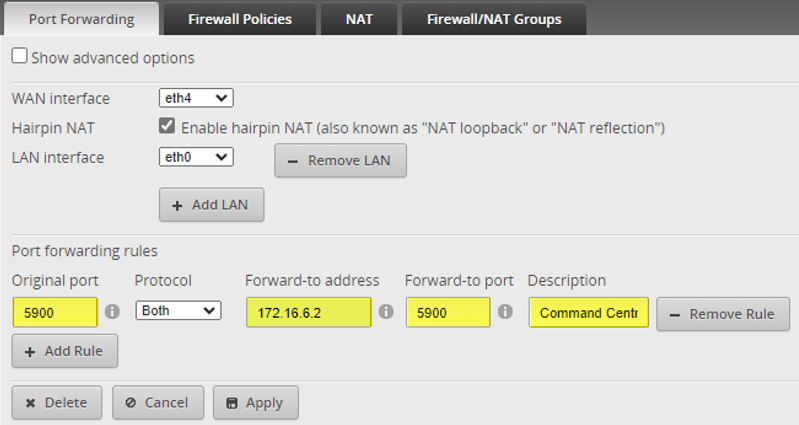
- Select Apply.
- Connect the Ethernet cable from the lab network to the Internet (eth4) connector at the rear of the instrument.
Note: The order of the ports will be reversed for instruments with serial number 300115 and below.
- Verify the connection on the EdgeMax dashboard. From the main dashboard, select
eth4 and review the connection status. (The ethernet port icon at the top of the screen should be
GREEN and the status should state
Connected).
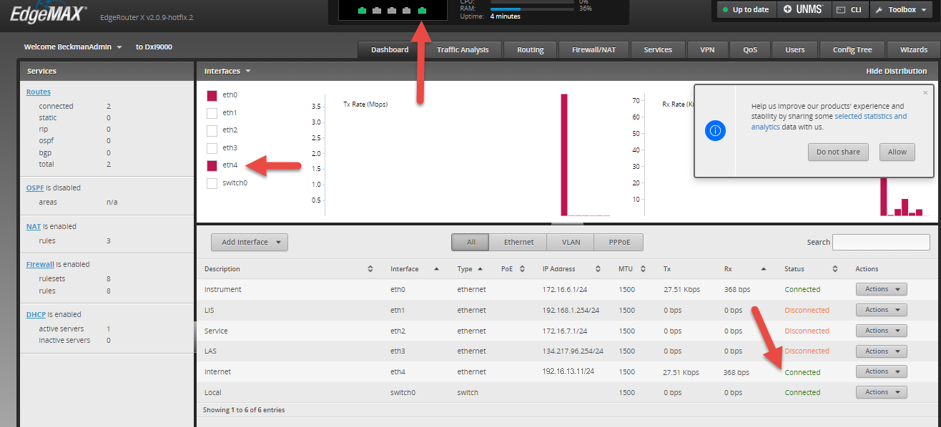